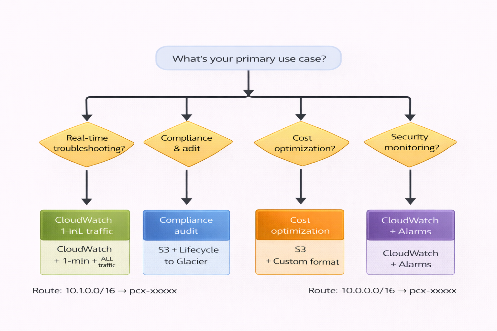
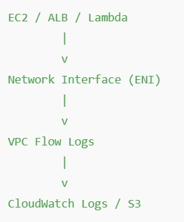

🌍 Real-Life Analogy
Think of VPC Flow Logs like security cameras in a shopping mall...
Imagine a large shopping mall with security cameras everywhere. These cameras don't record every detail of what people are buying or saying - instead, they record metadata: who entered (person's appearance), when they entered (timestamp), which entrance they used (door number), where they went (store names), and whether security let them in or stopped them.
Similarly, VPC Flow Logs don't capture the actual data being sent (like the contents of your emails or files). Instead, they record: who sent the traffic (source IP), who received it (destination IP), what door they used (port number), what language they spoke (protocol), and whether it was allowed or blocked (action).
Example: Just like reviewing mall security footage helps you understand "Why did someone get stuck at the entrance?" - VPC Flow Logs help you understand "Why can't my EC2 instance connect to the database?"
📖 Detailed Explanation
VPC Flow Logs is a monitoring service that captures information about the network traffic flowing to and from your resources in AWS. Think of it as a detailed journal that records every conversation happening in your virtual network.
What is it? VPC Flow Logs captures metadata about IP traffic - not the actual content, but information about who's talking to whom, using which protocol, on which port, and whether the traffic was allowed or rejected.
Why does it matter? When your application suddenly stops working or a security breach occurs, Flow Logs are your detective tool. They help you answer critical questions: "Is traffic reaching my server?", "Is it being blocked by security rules?", "Which IP addresses are trying to access my resources?"
How does it work? Once enabled, Flow Logs continuously monitors network interfaces and records traffic information. This data is sent to either CloudWatch Logs (for real-time monitoring and alerts) or S3 (for long-term storage and cost-effective archiving). You can then query this data to troubleshoot issues, detect security threats, or analyze traffic patterns.
🔑 Key Concepts
- Three Levels of Monitoring: VPC level (all resources), Subnet level (resources in specific subnet), or Network Interface level (specific EC2 or resource)
- Traffic Types: Capture only accepted traffic, only rejected traffic, or all traffic - choose based on your needs
- Aggregation Intervals: 1-minute intervals for real-time troubleshooting or 10-minute intervals for general monitoring
- Storage Destinations: CloudWatch Logs for real-time analysis or S3 buckets for cost-effective long-term storage
- Metadata Captured: Source/destination IPs, ports, protocol, packet count, byte count, action (accept/reject), and timestamps
- Zero Performance Impact: Flow logs operate outside your traffic path - they don't slow down your applications
- IAM Permissions Required: Flow logs need permissions to write to CloudWatch or S3
💼 Real-World Scenarios
Scenario 1: Best-Case Implementation ✅
| Aspect | Details |
|---|---|
| Context | An e-commerce company launches a new application with VPC Flow Logs enabled from day one across all VPCs, storing data in both CloudWatch (for alerts) and S3 (for compliance). |
| Challenge | At 3 AM on Black Friday, their payment processing service suddenly becomes unreachable. Customers can't complete purchases. |
| Solution | The on-call engineer queries Flow Logs in CloudWatch Insights and discovers that all traffic to the payment service is being REJECTED. Within 5 minutes, they identify a recently updated security group rule that accidentally blocked port 443. Rule corrected immediately. |
| Outcome | Service restored in 7 minutes total. Only $2,000 in lost sales instead of potentially $200,000 if debugging took hours. Flow Logs provided the exact cause instantly. |
Scenario 2: Worst-Case Scenario ❌
| Aspect | Details |
|---|---|
| Context | A healthcare startup launches their patient portal without enabling VPC Flow Logs to "save costs" - the service is free, but they didn't know that. |
| Challenge | Doctors start complaining that patient records randomly don't load. The issue is intermittent - sometimes works, sometimes doesn't. |
| Solution | With no Flow Logs, the team spends 3 days trying to debug. They add logging to the application, restart services multiple times, blame the database, blame the network team. Finally, they enable Flow Logs and discover in 10 minutes that a NACL rule is randomly rejecting return traffic on ephemeral ports. |
| Outcome | 3 days of downtime. 500+ frustrated doctors. Patients couldn't access critical medical records. Company reputation damaged. All because they didn't enable a free monitoring service from the start. |
Scenario 3: Edge-Case Scenario ⚠️
| Aspect | Details |
|---|---|
| Context | A financial services company has Flow Logs enabled but only captures ACCEPTED traffic to "reduce storage costs." |
| Challenge | Security team detects unusual activity - thousands of connection attempts to their database server from unknown IPs. They suspect a brute-force attack but can't confirm. |
| Solution | Because they only logged accepted traffic, they have no record of the rejected connection attempts. They can't determine the attack source IPs, patterns, or scope. They have to enable full logging and wait for the next attack to gather evidence. |
| Outcome | Unable to provide complete forensic data to law enforcement. Can't implement IP-based blocking because they don't know all attacker IPs. Learned the hard way: capture ALL traffic, not just accepted. The cost difference was only $50/month. |
📊 Scenario Comparison
| Scenario | Use Case | Best Practice Applied | Outcome |
|---|---|---|---|
| Best-Case | E-commerce payment service outage | Flow Logs enabled from day 1, stored in CloudWatch for alerts | 7-minute resolution, minimal revenue loss, fast root cause analysis |
| Worst-Case | Healthcare portal intermittent failures | No Flow Logs enabled to "save costs" | 3 days debugging, reputation damage, finally fixed in 10 min after enabling logs |
| Edge-Case | Financial services security incident | Only captured accepted traffic, not rejected | Incomplete forensic data, couldn't identify attackers, learned to log ALL traffic |
Key Learning: VPC Flow Logs are free for S3 storage and provide invaluable troubleshooting data. Always enable them on production VPCs and capture ALL traffic (accepted + rejected) for complete visibility. The cost of storage is trivial compared to the cost of downtime.
⚙️ Practical Implementation
Learn how to create VPC Flow Logs using both AWS CLI and AWS Management Console.
Method 1: Using AWS CLI
Prerequisites:
- AWS CLI installed and configured (
aws configure) - IAM permissions:
ec2:CreateFlowLogs,logs:CreateLogGroup,iam:PassRole - VPC ID that you want to monitor
Step 1: Create CloudWatch Log Group
aws logs create-log-group \
--log-group-name /aws/vpc/flowlogs/project-vpc \
--region us-east-1Explanation: Creates a log group in CloudWatch where flow log data will be stored. The log group name should be descriptive of which VPC it monitors.
Step 2: Create IAM Role for Flow Logs
# Create trust policy file
cat > flow-logs-trust-policy.json << EOF
{
"Version": "2012-10-17",
"Statement": [
{
"Effect": "Allow",
"Principal": {
"Service": "vpc-flow-logs.amazonaws.com"
},
"Action": "sts:AssumeRole"
}
]
}
EOF
# Create the role
aws iam create-role \
--role-name VPC-Flow-Logs-Role \
--assume-role-policy-document file://flow-logs-trust-policy.jsonExplanation: Creates an IAM role that allows the VPC Flow Logs service to assume it and write logs to CloudWatch.
Step 3: Attach Policy to Role
# Create permissions policy
cat > flow-logs-permissions.json << EOF
{
"Version": "2012-10-17",
"Statement": [
{
"Effect": "Allow",
"Action": [
"logs:CreateLogGroup",
"logs:CreateLogStream",
"logs:PutLogEvents",
"logs:DescribeLogGroups",
"logs:DescribeLogStreams"
],
"Resource": "*"
}
]
}
EOF
# Attach policy to role
aws iam put-role-policy \
--role-name VPC-Flow-Logs-Role \
--policy-name VPC-Flow-Logs-Policy \
--policy-document file://flow-logs-permissions.jsonExplanation: Grants the role permissions to create log streams and write log events to CloudWatch.
Step 4: Create VPC Flow Log
aws ec2 create-flow-logs \
--resource-type VPC \
--resource-ids vpc-0123456789abcdef0 \
--traffic-type ALL \
--log-destination-type cloud-watch-logs \
--log-group-name /aws/vpc/flowlogs/project-vpc \
--deliver-logs-permission-arn arn:aws:iam::123456789012:role/VPC-Flow-Logs-Role \
--max-aggregation-interval 60 \
--region us-east-1Explanation: Creates the flow log for your VPC. Replace vpc-0123456789abcdef0 with your VPC ID and update the ARN with your account ID. This captures ALL traffic with 1-minute aggregation.
Step 5: Verify Flow Log Creation
aws ec2 describe-flow-logs \
--filter "Name=resource-id,Values=vpc-0123456789abcdef0" \
--region us-east-1Expected output: JSON showing flow log status as "ACTIVE" with configuration details.
Method 2: Using AWS Management Console (GUI)
- Navigate: Go to AWS Management Console → VPC → Your VPCs
- Select VPC: Choose the VPC you want to monitor by clicking on its checkbox
- Create Flow Log:
- Click the "Flow logs" tab at the bottom
- Click "Create flow log" button (orange button)
- Configure Flow Log Settings:
- Name:
project-vpc-flow-logs - Filter: Select "All" to capture both accepted and rejected traffic
- Maximum aggregation interval: Select "1 minute" for faster debugging
- Destination: Select "Send to CloudWatch Logs"
- Name:
- Configure CloudWatch Destination:
- Destination log group: Enter
/aws/vpc/flowlogs/project-vpc - If log group doesn't exist, you'll be prompted to create it
- IAM role: Select "Create and use a new role" or choose existing role
- If creating new: AWS will auto-create role with necessary permissions
- Destination log group: Enter
- Review and Create:
- Review all settings
- Click "Create flow log"
- Wait for status to change to "Active" (takes 1-2 minutes)
- View Flow Logs:
- Go to CloudWatch → Log groups
- Find your log group:
/aws/vpc/flowlogs/project-vpc - Click on log group to see log streams
- Click on any log stream to view actual flow log records
- Wait 5-10 minutes for data to appear (initial setup takes time)
✅ Success Indicators:
- Flow log status shows as "Active" in VPC console
- Log group appears in CloudWatch Logs
- Log streams start appearing (one per network interface)
- Log records contain fields: srcaddr, dstaddr, srcport, dstport, protocol, action
- Can see both ACCEPT and REJECT actions in logs
✅ Best Practices
| Practice | Why It Matters | How to Implement |
|---|---|---|
| Enable at VPC level from day one | Ensures comprehensive coverage of all resources without gaps | Create flow log during VPC setup, don't wait for problems to occur |
| Capture ALL traffic, not just accepted or rejected | Complete visibility for both troubleshooting and security forensics | Set traffic-type to "ALL" when creating flow log |
| Use S3 for long-term storage | CloudWatch Logs become expensive for large volumes; S3 is 10x cheaper | Configure S3 as destination with lifecycle policies to Glacier after 90 days |
| Use CloudWatch for active monitoring | Real-time alerts for security events or connectivity issues | Duplicate flow logs: one to S3 (archive), one to CloudWatch (alerts) |
| Use 1-minute aggregation for production | Faster detection of issues; extra cost is minimal compared to downtime | Set max-aggregation-interval to 60 seconds |
| Create CloudWatch alarms for rejected traffic | Proactive detection of misconfigured security rules or attacks | Use metric filters on "action=REJECT" and set threshold alarms |
| Use custom log format for specific needs | Reduces storage costs by capturing only fields you need | Specify custom format with only required fields in create-flow-logs command |
🔀 Decision Flow
Use this decision tree to determine the right Flow Logs configuration for your use case.

Figure 1: Decision Tree for VPC Flow Logs Configuration
🔧 Troubleshooting
| Issue | Possible Cause | Solution |
|---|---|---|
| Flow log status shows "Failed" | IAM role lacks permissions to write to CloudWatch or S3 | Verify IAM role has logs:CreateLogStream and logs:PutLogEvents permissions; check trust policy |
| No data appearing in CloudWatch | Flow logs take 5-15 minutes to start capturing data after creation | Wait 15 minutes; generate some traffic (ping, SSH); refresh CloudWatch console |
| Log streams empty or minimal data | Very low traffic on VPC; or network interfaces not yet active | Create EC2 instance, generate traffic with curl/wget; verify traffic with tcpdump first |
| Cannot find log group in CloudWatch | Log group name typo; or wrong AWS region selected | Verify exact log group name; ensure you're in correct region in both VPC and CloudWatch console |
| Seeing NODATA in log records | Network interface has no traffic during aggregation interval | This is normal; indicates no traffic occurred; not an error condition |
| High CloudWatch costs | High-traffic VPC generating large log volume | Switch to S3 destination; use custom log format to reduce fields; increase aggregation interval to 10 min |
| Cannot create flow log | Already have 2 flow logs on same resource (AWS limit) | Delete existing unused flow log; or use different destination for new log |
📊 Visual Architecture

Figure 2: VPC Flow Logs Architecture - Traffic metadata captured from ENIs and stored in CloudWatch Logs or S3
Architecture Components:
- EC2 / ALB / Lambda: Resources with Elastic Network Interfaces (ENIs)
- Network Interface (ENI): Virtual network card where traffic flows
- VPC Flow Logs Service: Captures metadata from ENI traffic
- CloudWatch Logs: Real-time log storage with querying and alerting
- S3 Bucket: Cost-effective long-term archive storage
- IAM Role: Provides permissions for Flow Logs to write to destinations
💡 Key Takeaways
- Enable VPC Flow Logs from day one on all production VPCs - they're invaluable for troubleshooting
- Always capture ALL traffic (accepted + rejected) for complete visibility into network behavior
- Use CloudWatch Logs for real-time monitoring and S3 for cost-effective long-term storage
- Flow logs capture metadata only, not packet contents - safe for compliance and privacy
- 1-minute aggregation provides faster troubleshooting with minimal extra cost
- Flow logs operate outside the traffic path and have zero impact on network performance
- Set up CloudWatch alarms on rejected traffic to detect misconfigurations and attacks proactively
- Flow logs are essential for security forensics - capture evidence before incidents occur